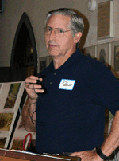
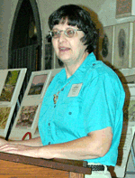
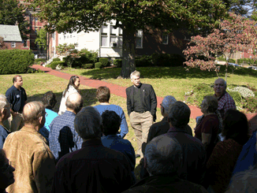
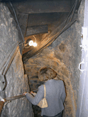
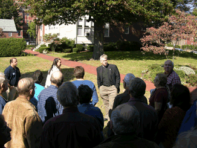
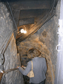

"The French and Indian War"
Date: Saturday, October 15, 2005
Location: Emmanuel Episcopal Church, Cumberland, MD
Here is what you missed:

Welcome- Ed Hanna, Pres.,W.MD Chapter: Ed welcomed everyone to the 2005 Annual Meeting of ASM. THe Wesern Maryland Chapter was our host for the day.

ASM President, Carol Ebright, presided over the business meeting. Events that took place over the past year were discussed and our outlook for the future was reviewed.

The 2005 William B.Marye Award was presented to Robert L. Bantz, Sr. His long effort to research details of the Braddock Road and present that information to the public was recognized in this award.

The Frederick M. Stiner Memorial Lecture “The French and Indian War in the Western Frontier”- Mr.Charles C. Hall, Pres., Fort Edwards Foundation
His concise outline of the events the led up to and occurred in the French and Indian War was an excellent precursor to the day's discussions.
 


“Fort
Cumberland”- Lecture and Tour - The Reverend Edward Carter
Chapman, Rector,
Emmanuel Episcopal Church
Reverend Chapman present a historyof "Fort Cumberland, located on the spot now occupied by the Episcopal church. He followed with a tour of the trenchs, tunnels and buildings that make up an interesting location.

“Native Americans and the French and Indian War”- Guy Wells, Living Historian
Guy presented the life ways that a native americanin the late 1700s would have experienced.

“Braddock’s Road” Robert Bantz, Historian
The day was completed with Bob Bantz' history of Braddock's Road. SHown through his extensive research of the road and his documentation of the historic area.